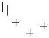

تحلیل تکنیکال
الگوهای کندل استیک ها
الگوهای برگشتی صعودی
Bullish Tri-Star

الگوی سه ستاره صعودی از ترکیب سه شمع Doji مانند تشکیل شده اندازه سایه ها در این سه شمع حائز اهمیت نمی باشد
اما وجود شکاف (گپ) نزولی بین شمع اول و دوم و شکاف صعودی بین شمع دوم و سوم بر قدرت این الگو برای تغییر روند از
نزولی به صعودی می افزاید.